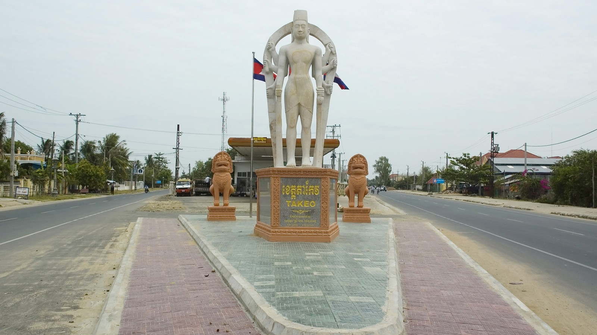

Takeo province, bordering Vietnam to the south, is blessed with natural beauty and many historical sites. Takeo is often recognized as “the cradle of the Cambodian civilization,” and contains several significant pre-Angkorian sites.

While heading towards Takeo, make a trip to Phnom Chisor to visit a
well-preserved 11th century temple from the Angkor era. The temple is
built on the crest of the hill and surrounded by panoramic views of the
countryside. The climb up 503 steps to the top may be vigorous, but the
stunning view of the countryside at the end makes it truly worthwhile.
This ancient temple is now an active one where Buddhists make pilgrimages
on religious occasions. There are monks’ quarters and a school. Fine
carvings of Hindu deities can still be seen on the towers and at the
libraries, and unique carvings decorate the door of the main temple.
In Takeo, the Tonle Bati a favourite recreational spot for the locals
during leisure is a pleasant place to stop by for a standard Khmer meal.
The nearby Tonle Bati Temple is a ‘largely intact’ Angkorian-style temple
with a picturesque garden. The Yeay Pov Temple, named after King Ta
Prohm’s mother, is another another historical temple situated near the
popular Tonle Bati Lake.
For families, a visit to the Phnom Ta Mao wild life rescue centre is an
enriching trip. The centre was set up to preserve rescued rare and
endangered local wildlife. Eighty hectares of the area serves as a zoo for
visitors.